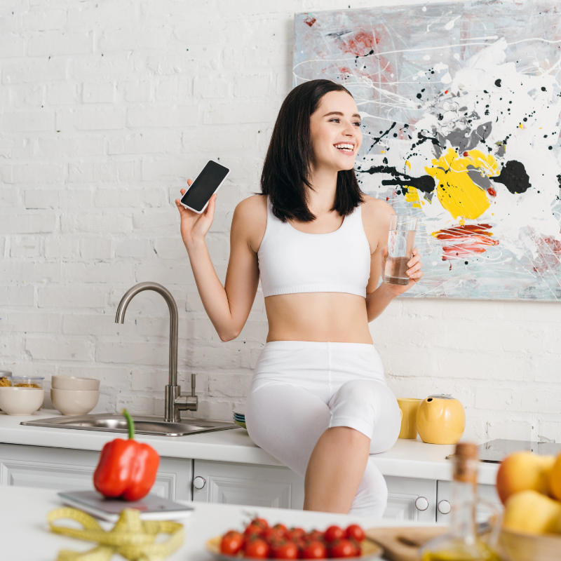
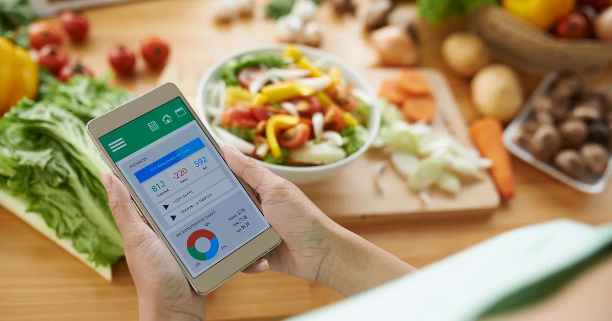

Počítání kalorií při hubnutí: kompletní návod
Pokud chcete zhubnout, potřebujete jíst méně kalorií, než kolik vaše tělo spotřebuje. Zní to jednoduše – a v principu to jednoduché je. Ale jak zjistit, kolik kalorií vlastně potřebujete? Jak velký deficit vytvořit? A musíte opravdu počítat každou kalorii?
V tomto článku vám krok za krokem ukážeme, jak si spočítat denní příjem kalorií při hubnutí, jak správně jíst a na co si dát pozor, abyste zhubli zdravě a bez zbytečného stresu.

Jak fungují kalorie a energetická bilance
Kalorie (přesněji kilokalorie, kcal) jsou jednotkou energie, kterou tělo získává z potravy. Vaše tělo tuto energii využívá na tři hlavní účely:
- Bazální metabolismus (BMR) – energie na udržení základních životních funkcí v klidu (dýchání, činnost srdce, mozku). Tvoří 60–70 % celkového výdeje. Více v článku o bazálním metabolismu.
- Termický efekt potravy (TEF) – energie spotřebovaná na trávení. Tvoří asi 10 % celkového výdeje.
- Fyzická aktivita – vše od chůze po intenzivní cvičení. Tvoří 20–30 % výdeje.
Součet těchto tří složek dává TDEE (Total Daily Energy Expenditure) – celkový denní energetický výdej. Pokud jíte méně než vaše TDEE, hubněte. Pokud jíte více, přibíráte. Jednoduché.
Jak vypočítat denní příjem kalorií při hubnutí
Krok 1: Spočítejte si bazální metabolismus
Nejpoužívanější vzorec je Mifflin-St Jeor:
Muži: BMR = 10 × váha (kg) + 6,25 × výška (cm) − 5 × věk − 161 + 166
Ženy: BMR = 10 × váha (kg) + 6,25 × výška (cm) − 5 × věk − 161
Krok 2: Vynásobte koeficientem aktivity
| Úroveň aktivity | Koeficient | Popis |
|---|---|---|
| Sedavá | 1,2 | Práce u PC, minimum pohybu |
| Mírně aktivní | 1,375 | Lehké cvičení 1–3× týdně |
| Středně aktivní | 1,55 | Cvičení 3–5× týdně |
| Velmi aktivní | 1,725 | Intenzivní cvičení 6–7× týdně |
| Extrémně aktivní | 1,9 | Fyzická práce + denní trénink |
TDEE = BMR × koeficient aktivity
Krok 3: Odečtěte kalorický deficit
Pro zdravé hubnutí odečtěte 300–500 kcal od vašeho TDEE. To vám dá cílový denní příjem kalorií.
Příklad: Žena, 75 kg, 168 cm, 35 let, sedavá práce
BMR = 10 × 75 + 6,25 × 168 − 5 × 35 − 161 = 1 464 kcal
TDEE = 1 464 × 1,2 = 1 757 kcal
Příjem pro hubnutí = 1 757 − 400 = ~1 350 kcal
Spočítejte si své BMI a zjistěte, kam se řadíte.

Jak správně jíst při hubnutí
Počítání kalorií je základ, ale kvalita stravy je stejně důležitá jako množství. Můžete se vejít do kalorického limitu i se samými sušenkami – ale budete hladoví, unavení a bez živin. Tady je, jak na to chytře:
Pravidla, která fungují
- Bílkoviny na první místo – 1,2–2 g/kg hmotnosti. Sytí nejvíc ze všech makroživin a chrání svaly. Každé jídlo by mělo obsahovat zdroj bílkovin.
- Zelenina jako základ – nízká kalorická hustota, vysoký objem. Půl talíře zeleniny = málo kalorií, hodně sytosti.
- Komplexní sacharidy – celozrnné obiloviny, luštěniny, batáty. Uvolňují energii postupně a udržují stabilní hladinu cukru.
- Zdravé tuky – ořechy, olivový olej, avokádo, tučné ryby. Nelze vynechat, ale pozor na množství (1 g tuku = 9 kcal).
- Pijte vodu – často zaměňujeme žízeň za hlad. Sklenice vody před jídlem pomáhá se sytostí.
Co omezit
- Slazené nápoje (cola, džusy, slazené kávy) – „tekuté kalorie" nesytí
- Bílé pečivo a sladkosti – rychlé cukry → výkyvy glykémie → hlad
- Smažená jídla – obrovská kalorická hustota
- Alkohol – 1 g alkoholu = 7 kcal, navíc zvyšuje chuť k jídlu
Praktické tipy pro počítání kalorií
Počítání kalorií nemusí být otrava. Stačí se naučit pár základních principů a do pár týdnů budete odhadovat porce intuitivně.
Nástroje pro počítání
- Aplikace – MyFitnessPal, Kalorické Tabulky (česká), FatSecret. Stačí naskenovat čárový kód nebo zadat jídlo.
- Kuchyňská váha – nejpřesnější metoda. Investice za 300 Kč, která se vyplatí.
- Metoda dlaně – hrubý odhad: porce bílkovin = dlaň, sacharidů = hrst, tuků = palec
Časté chyby při počítání kalorií
| Chyba | Proč je to problém | Řešení |
|---|---|---|
| Nepočítání olejů a dressingů | 1 lžíce oleje = 120 kcal | Měřte tuky lžičkou |
| Zapomínání na nápoje | Latte se sirupem = 300+ kcal | Zapisujte i tekutiny |
| Odhadování „od oka" | Porce bývají o 30–50 % větší | Používejte váhu |
| Příliš přísný deficit | Zpomalení metabolismu, hlad | Max. deficit 500 kcal |
| Neúčtování ochutnávek | Ochutnávky = stovky kcal denně | Zapište vše, co sníte |
Musíte počítat kalorie napořád?
Ne. Počítání kalorií je nástroj pro učení, ne celoživotní závazek. Většina lidí potřebuje aktivně počítat 4–8 týdnů, než si vytvoří dostatečný přehled o tom, co a kolik jí. Poté stačí:
- Kontrolní vážení 1× týdně – pokud váha stagnuje nebo klesá, jste na dobré cestě
- Občasný „kontrolní den" s přesným zápisem – jednou za 2–3 týdny
- Intuitivní odhad na základě naučených znalostí
Pokud se váha zastaví, vraťte se k přesnému počítání na týden – často zjistíte, že se vám porce postupně zvětšily.
Důležité: pokud vám počítání kalorií způsobuje stres nebo obsedantní chování kolem jídla, raději přestaňte a poraďte se s nutričním terapeutem. Hubnutí by nemělo být na úkor psychického zdraví.
Shrnutí: počítání kalorií v 5 krocích
- Spočítejte si bazální metabolismus
- Vynásobte koeficientem aktivity → získáte TDEE
- Odečtěte 300–500 kcal → cílový denní příjem
- Zaměřte se na kvalitu stravy – bílkoviny, zelenina, komplexní sacharidy
- Měřte, zapisujte a po pár týdnech přejděte na intuitivní odhad
Chcete začít? Spočítejte si BMI a zjistěte, jak daleko jste od svého cíle. A pokud hledáte vhodný pohyb k hubnutí, mrkněte na nejlepší sporty na hubnutí nebo na hubnutí chůzí.